Visite et estimation
Dès qu'on connaît votre date de prise de possession. On visite avec le vendeur, ou directement après chez le notaire. Devis sous 48h.
Vaudreuil-Dorion · Île-Perrot · Hudson
Vous prenez possession dans 2 semaines. Le déménageur arrive le 15. Entre les deux, on a une fenêtre — et c'est là qu'on travaille. La maison est livrée fraîche, sèche, aérée. Vous arrivez avec vos boîtes. Vous emménagez chez vous, pas dans un chantier.
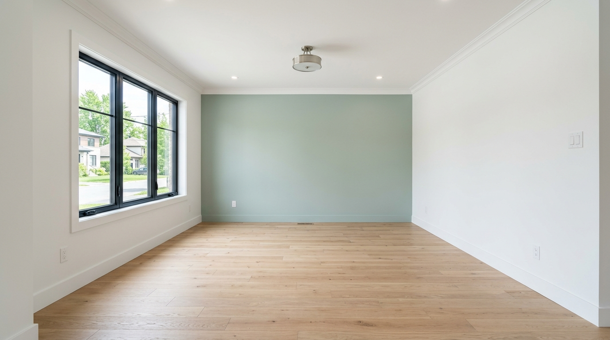
Livré le 14 · Emménagement le 15Comment ça se passe
Notre travail s'inscrit entre la prise de possession et la journée du déménageur. Voici la séquence type — adaptable à votre calendrier.
Dès qu'on connaît votre date de prise de possession. On visite avec le vendeur, ou directement après chez le notaire. Devis sous 48h.
On amène les nuanciers. On teste sur les murs, à votre lumière. Vous décidez tranquillement, sans courir.
Maison vide, accès facile. On peint vite et bien : protection des planchers, calfeutrage, deux couches. Plafonds, murs, boiseries.
On marche la maison ensemble. Toute retouche faite avant qu'on remballe. Aération 24h. Maison prête.
Murs secs, odeur partie, finition impeccable. Vous emménagez dans votre nouvelle maison — pas dans un chantier.
Ce qu'on peint
Plafonds, murs, boiseries dans toutes les pièces. La maison est livrée prête le jour J.
Garder le blanc du constructeur sur la majorité, ajouter 1 ou 2 murs d'accent personnels.
Couleurs douces, peintures à faible COV. Sèches en 2h, dormables en 48h avec ventilation.
Repeindre les armoires de mélamine, refaire les murs avec un produit anti-humidité.
Salle de jeux, bureau, salle TV. Préparation contre l'humidité, finis adaptés aux espaces familiaux.
Porte d'entrée, balcon, garde-corps, garage. Petites touches qui font la différence à l'arrivée.
Pièces vides livrées
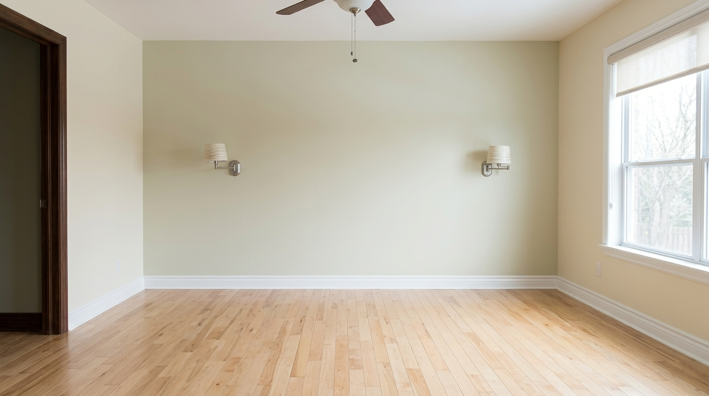
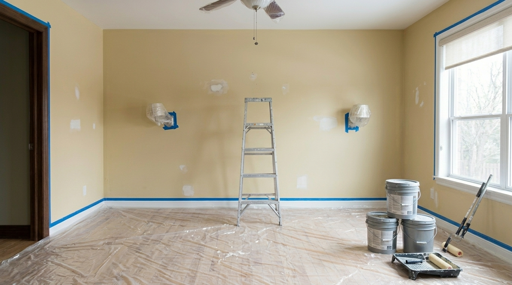
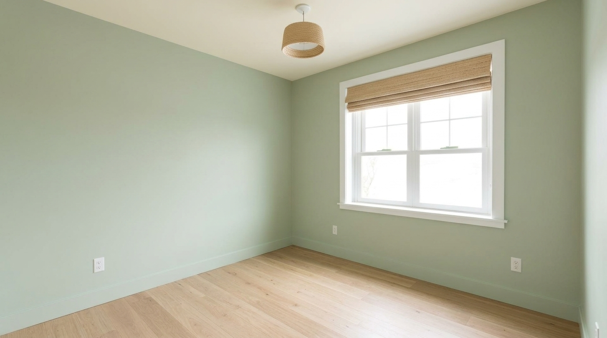
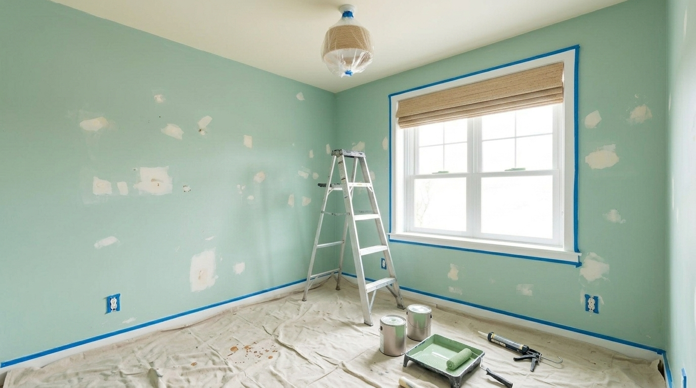
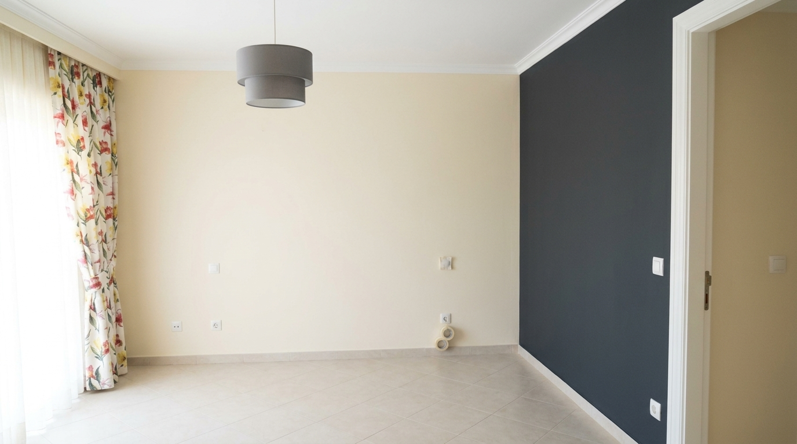
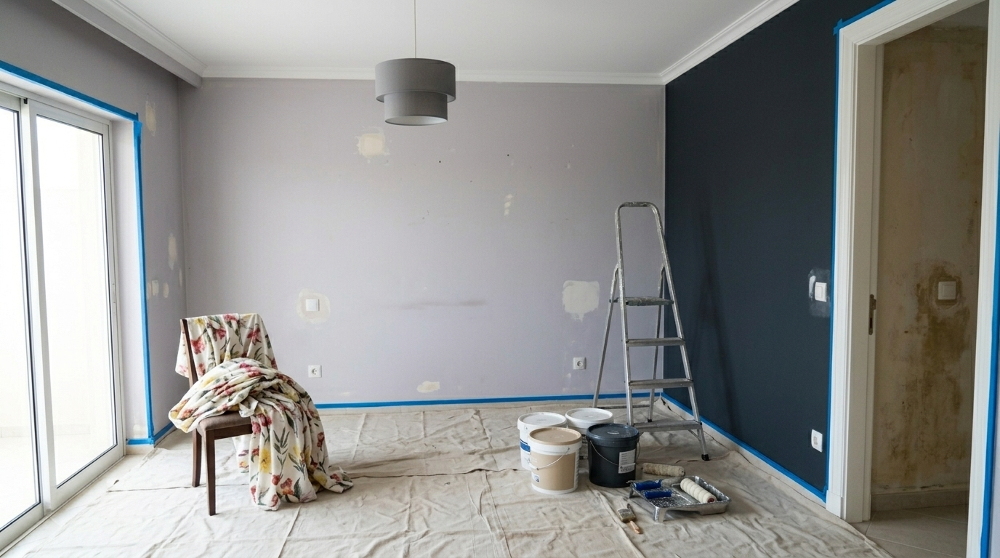
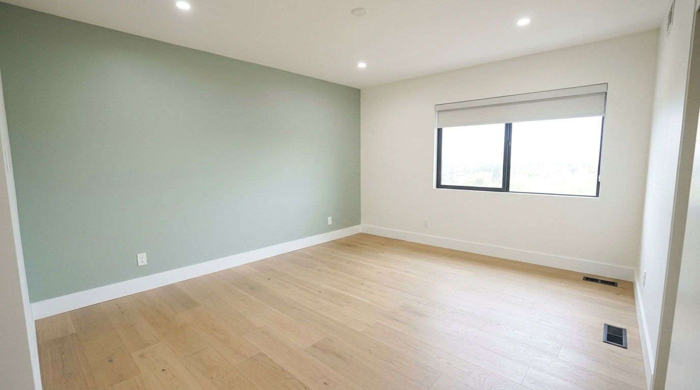
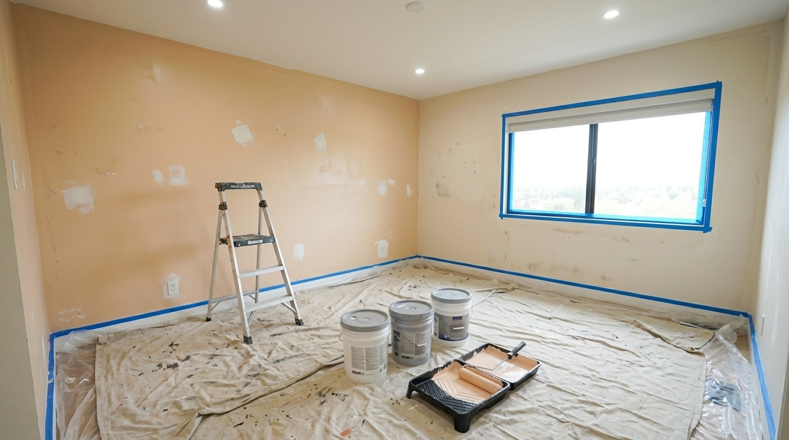
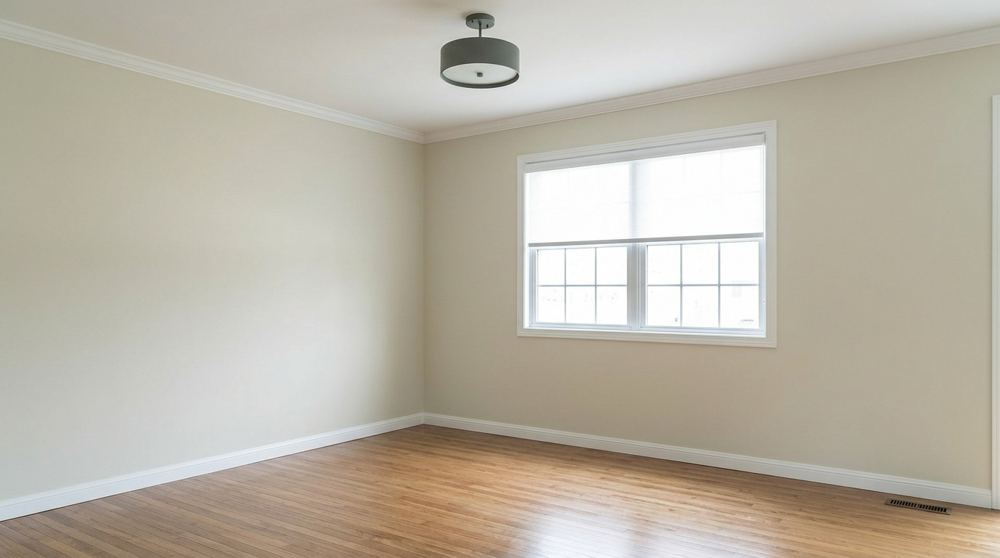
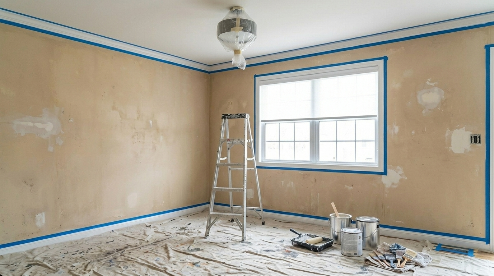
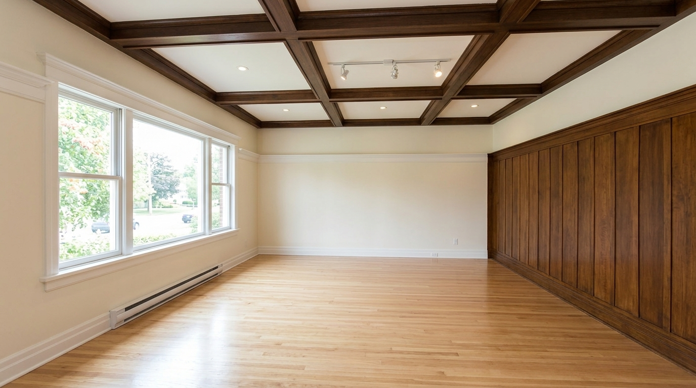
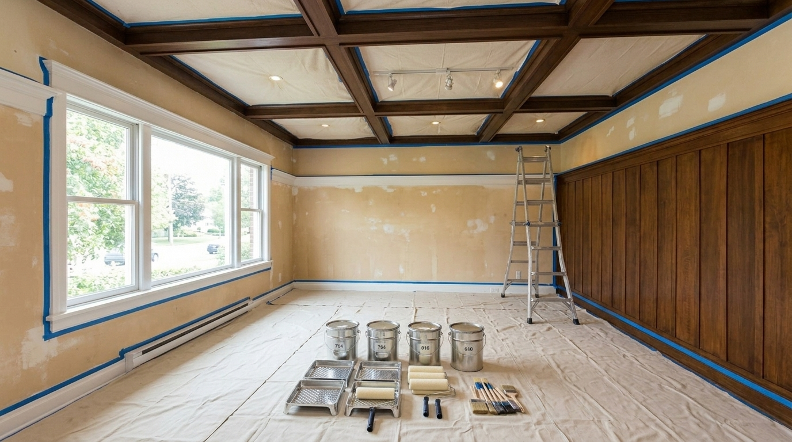
À préparer
Pour qu'on travaille vite et bien dans votre maison vide, voici ce qui aide. Rien d'obligatoire — on s'adapte si vous ne pouvez pas tout faire.
Couverture
Témoignages
Notre première maison. On a pris possession le vendredi, ils ont peint du samedi au mercredi. Le jeudi soir, on dormait dedans. Aucune odeur. Aucun stress.
Camille & Thomas · Harwood
Condo neuf à Pincourt. On voulait juste deux murs en couleur, le reste blanc constructeur. Une journée et demie. Pas de minimum gonflé.
Sébastien · Pincourt
On vient de Montréal, jamais peinturé une maison de notre vie. Ils ont coordonné avec notre déménageur directement. On n'a pas eu à gérer.
Famille Bouchard · Hudson
FAQ
Oui, c'est notre spécialité. Idéalement on travaille 3 à 5 jours avant votre journée d'arrivée pour que tout soit sec et aéré.
Les peintures à faible COV qu'on utilise sont sèches au toucher en 2h et cuisinables en 24h. Pour dormir sans odeur, on recommande 48–72h avec ventilation.
Oui — Pincourt, Notre-Dame-de-l'Île-Perrot, Terrasse-Vaudreuil, Hudson, Saint-Lazare, Rigaud. Pour Hudson et au-delà, on demande un chantier minimum d'une journée.
Idéalement dès que votre offre d'achat est acceptée. Plus on a de marge, plus on peut bien planifier autour de votre déménageur.
Oui, pas de minimum gonflé. Une chambre, un mur d'accent, une cuisine — on accepte les petits projets ciblés à Vaudreuil-Dorion.
Bétonel Aura ou Benjamin Moore Natura — peintures à très faible teneur en COV, certifiées Greenguard. Sécuritaires pour les familles avec enfants ou bébés.
Oui. Si vous nous donnez son numéro, on s'arrange pour qu'il n'y ait pas de chevauchement entre la fin de notre chantier et son arrivée.
Garantie écrite de 2 ans sur l'application. Pour les chantiers avant emménagement, on inclut une visite à 6 mois pour vérifier que tout tient bien après l'installation.
Choisir ma date
Donnez-nous votre date de notarié et la date prévue du déménageur. On vous rappelle pour fixer la visite et bloquer la fenêtre de chantier.